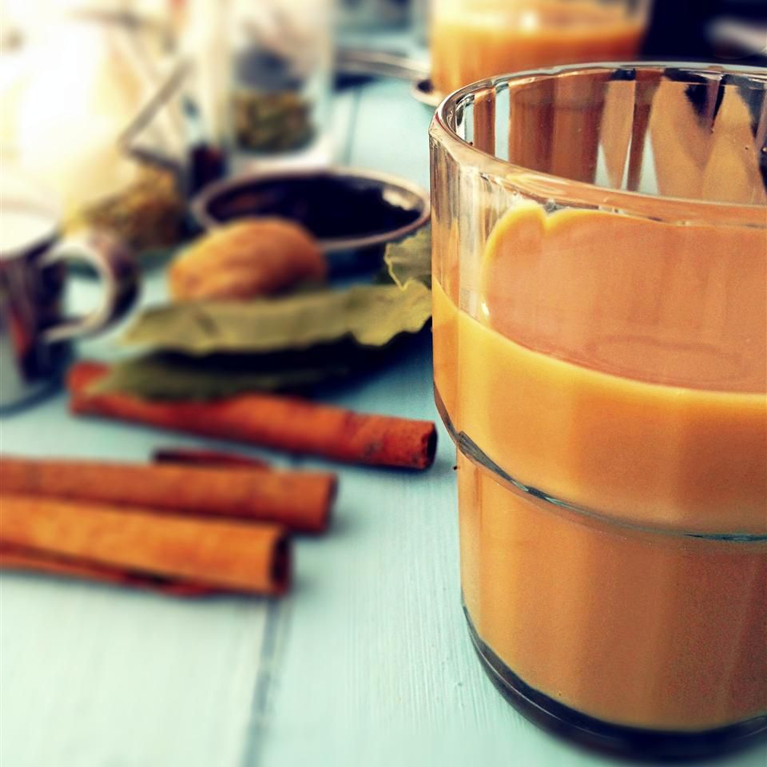

Home
Himalayan Chai Tea
A refreshing beverage to make your day great!

Description
An Indo-English brew that tastes strong and smooth also rich in aroma, makes for a flavourful wholesome cup of tea.
A cup of Masala chai simply leaves you craving for more!
It is an immunity boosting natural blend of Cinnamon, Bay leaves, Ginger, Cardamom, fennel, peppercorn
Ingredients
- 7 cups water
- Light brown sugar
- 1 ¼ inch piece fresh ginger root, peeled and chopped
- 6 green cardamom pods
- 12 whole cloves
- 2 bay leaves
- 1 tablespoon fennel seeds
- ½ teaspoon black peppercorns
- 2 tablespoons Darjeeling tea leaves
- 1 cup milk
Directions
- Combine water, brown sugar, ginger, cinnamon stick, cardamom pods, cloves, bay leaves, fennel seeds, and peppercorns together in a pot;
- Cover and boil for 20 minutes.
- Remove from the heat, add tea leaves, and allow to steep for 10 minutes.
- Stir milk into tea mixture and bring to a boil. Strain tea into tea cups.